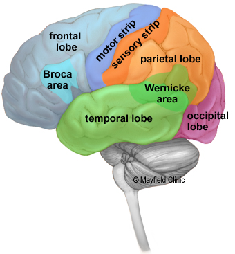

The brain is an amazing three-pound organ that controls all functions of the body, interprets information from the outside world, and embodies the essence of the mind and soul. Intelligence, creativity, emotion, and memory are a few of the many things governed by the brain. Protected within the skull, the brain is composed of the cerebrum, cerebellum, and brainstem. The brain receives information through our five senses: sight, smell, touch, taste, and hearing - often many at one time. It assembles the messages in a way that has meaning for us, and can store that information in our memory. The brain controls our thoughts, memory and speech, movement of the arms and legs, and the function of many organs within our body. The central nervous system (CNS) is composed of the brain and spinal cord. The peripheral nervous system (PNS) is composed of spinal nerves that branch from the spinal cord and cranial nerves that branch from the brain.
The brain is composed of the cerebrum, cerebellum, and brainstem.
It is the largest part of the brain and is composed of right and left hemispheres. It performs higher functions like interpreting touch, vision and hearing, as well as speech, reasoning, emotions, learning, and fine control of movement.
It is located under the cerebrum. Its function is to coordinate muscle movements, maintain posture, and balance
It acts as a relay center connecting the cerebrum and cerebellum to the spinal cord. It performs many automatic functions such as breathing, heart rate, body temperature, wake and sleep cycles, digestion, sneezing, coughing, vomiting, and swallowing.
The cerebrum is divided into two halves: the right and left hemispheres. They are joined by a bundle of fibers called the corpus callosum that transmits messages from one side to the other. Each hemisphere controls the opposite side of the body.
If a stroke occurs on the right side of the brain, your left arm or leg may be weak or paralyzed.
Not all functions of the hemispheres are shared. In general, the left hemisphere controls speech, comprehension, arithmetic, and writing. The right hemisphere controls creativity, spatial ability, artistic, and musical skills. The left hemisphere is dominant in hand use and language in about 92% of people.

The cerebral hemispheres have distinct fissures, which divide the brain into lobes. Each hemisphere has 4 lobes: frontal, temporal, parietal, and occipital. Each lobe may be divided, once again, into areas that serve very specific functions. It’s important to understand that each lobe of the brain does not function alone. There are very complex relationships between the lobes of the brain and between the right and left hemispheres.
In general, the left hemisphere of the brain is responsible for language and speech and is called the "dominant" hemisphere. The right hemisphere plays a large part in interpreting visual information and spatial processing. In about one third of people who are left-handed, speech function may be located on the right side of the brain. Left-handed people may need special testing to determine if their speech center is on the left or right side prior to any surgery in that area.
Aphasia is a disturbance of language affecting speech production, comprehension, reading or writing, due to brain injury - most commonly from stroke or trauma. The type of aphasia depends on the brain area damaged.
Broca's area: lies in the left frontal lobe (Fig 3). If this area is damaged, one may have difficulty moving the tongue or facial muscles to produce the sounds of speech. The person can still read and understand spoken language but has difficulty in speaking and writing (i.e. forming letters and words, doesn't write within lines) -called Broca's aphasia.
Wernicke's area: lies in the left temporal lobe (Fig 3). Damage to this area causes Wernicke's aphasia. The individual may speak in long sentences that have no meaning, add unnecessary words, and even create new words. They can make speech sounds, however they have difficulty understanding speech and are therefore unaware of their mistakes.
The surface of the cerebrum is called the cortex. It has a folded appearance with hills and valleys. The cortex contains 16 billion neurons (the cerebellum has 70 billion = 86 billion total) that are arranged in specific layers. The nerve cell bodies color the cortex grey-brown giving it its name - gray matter. Beneath the cortex are long nerve fibers (axons) that connect brain areas to each other — called white matter.
The folding of the cortex increases the brain's surface area allowing more neurons to fit inside the skull and enabling higher functions. Each fold is called a gyrus, and each groove between folds is called a sulcus. There are names for the folds and grooves that help define specific brain regions.
Pathways called white matter tracts connect areas of the cortex to each other. Messages can travel from one gyrus to another, from one lobe to another, from one side of the brain to the other, and to structures deep in the brain.
It is located in the floor of the third ventricle and is the master control of the autonomic system. It plays a role in controlling behaviors such as hunger, thirst, sleep, and sexual response. It also regulates body temperature, blood pressure, emotions, and secretion of hormones.
It lies in a small pocket of bone at the skull base called the sella turcica. The pituitary gland is connected to the hypothalamus of the brain by the pituitary stalk. Known as the “master gland,” it controls other endocrine glands in the body. It secretes hormones that control sexual development, promote bone and muscle growth, and respond to stress.
It is located behind the third ventricle. It helps regulate the body's internal clock and circadian rhythms by secreting melatonin. It has some role in sexual development.
It serves as a relay station for almost all information that comes and goes to the cortex. It plays a role in pain sensation, attention, alertness and memory.
It includes the caudate, putamen and globus pallidus. These nuclei work with the cerebellum to coordinate fine motions, such as fingertip movements.
It is the center of our emotions, learning, and memory. Included in this system are the cingulate gyri, hypothalamus, amygdala (emotional reactions) and hippocampus (memory).
Memory is a complex process that includes three phases: encoding (deciding what information is important), storing, and recalling. Different areas of the brain are involved in different types of memory. Your brain has to pay attention and rehearse in order for an event to move from short-term to long-term memory - called encoding.
The brain has hollow fluid-filled cavities called ventricles. Inside the ventricles is a ribbon-like structure called the choroid plexus that makes clear colorless cerebrospinal fluid (CSF). CSF flows within and around the brain and spinal cord to help cushion it from injury. This circulating fluid is constantly being absorbed and replenished.
There are two ventricles deep within the cerebral hemispheres called the lateral ventricles. They both connect with the third ventricle through a separate opening called the foramen of Monro. The third ventricle connects with the fourth ventricle through a long narrow tube called the aqueduct of Sylvius. From the fourth ventricle, CSF flows into the subarachnoid space where it bathes and cushions the brain. CSF is recycled (or absorbed) by special structures in the superior sagittal sinus called arachnoid villi.
A balance is maintained between the amount of CSF that is absorbed and the amount that is produced. A disruption or blockage in the system can cause a build up of CSF, which can cause enlargement of the ventricles (hydrocephalus) or cause a collection of fluid in the spinal cord (syringomyelia).
The purpose of the bony skull is to protect the brain from injury. The skull is formed from 8 bones that fuse together along suture lines. These bones include the frontal, parietal (2), temporal (2), sphenoid, occipital and ethmoid. The face is formed from 14 paired bones including the maxilla, zygoma, nasal, palatine, lacrimal, inferior nasal conchae, mandible, and vomer.
Inside the skull are three distinct areas: anterior fossa, middle fossa, and posterior fossa. Doctors sometimes refer to a tumor's location by these terms, e.g., middle fossa meningioma.
Similar to cables coming out the back of a computer, all the arteries, veins and nerves exit the base of the skull through holes, called foramina. The big hole in the middle (foramen magnum) is where the spinal cord exits.
The brain and spinal cord are covered and protected by three layers of tissue called meninges. From the outermost layer inward they are: the dura mater, arachnoid mater, and pia mater.
Dura mater: is a strong, thick membrane that closely lines the inside of the skull; its two layers, the periosteal and meningeal dura, are fused and separate only to form venous sinuses. The dura creates little folds or compartments. There are two special dural folds, the falx and the tentorium. The falx separates the right and left hemispheres of the brain and the tentorium separates the cerebrum from the cerebellum.
Arachnoid mater: is a thin, web-like membrane that covers the entire brain. The arachnoid is made of elastic tissue. The space between the dura and arachnoid membranes is called the subdural space. Pia mater: hugs the surface of the brain following its folds and grooves. The pia mater has many blood vessels that reach deep into the brain. The space between the arachnoid and pia is called the subarachnoid space. It is here where the cerebrospinal fluid bathes and cushions the brain.Blood is carried to the brain by two paired arteries, the internal carotid arteries and the vertebral arteries. The internal carotid arteries supply most of the cerebrum.
The vertebral arteries supply the cerebellum, brainstem, and the underside of the cerebrum. After passing through the skull, the right and left vertebral arteries join together to form the basilar artery. The basilar artery and the internal carotid arteries “communicate” with each other at the base of the brain called the Circle of Willis. The communication between the internal carotid and vertebral-basilar systems is an important safety feature of the brain. If one of the major vessels becomes blocked, it is possible for collateral blood flow to come across the Circle of Willis and prevent brain damage.
The venous circulation of the brain is very different from that of the rest of the body. Usually arteries and veins run together as they supply and drain specific areas of the body. So one would think there would be a pair of vertebral veins and internal carotid veins. However, this is not the case in the brain. The major vein collectors are integrated into the dura to form venous sinuses — not to be confused with the air sinuses in the face and nasal region. The venous sinuses collect the blood from the brain and pass it to the internal jugular veins. The superior and inferior sagittal sinuses drain the cerebrum, the cavernous sinuses drains the anterior skull base. All sinuses eventually drain to the sigmoid sinuses, which exit the skull and form the jugular veins. These two jugular veins are essentially the only drainage of the brain.
The brain is made up of two types of cells: nerve cells (neurons) and glia cells.
There are many sizes and shapes of neurons, but all consist of a cell body, dendrites and an axon. The neuron conveys information through electrical and chemical signals. Try to picture electrical wiring in your home. An electrical circuit is made up of numerous wires connected in such a way that when a light switch is turned on, a light bulb will beam. A neuron that is excited will transmit its energy to neurons within its vicinity.
Neurons transmit their energy, or “talk”, to each other across a tiny gap called a synapse. A neuron has many arms called dendrites, which act like antennae picking up messages from other nerve cells. These messages are passed to the cell body, which determines if the message should be passed along. Important messages are passed to the end of the axon where sacs containing neurotransmitters open into the synapse. The neurotransmitter molecules cross the synapse and fit into special receptors on the receiving nerve cell, which stimulates that cell to pass on the message.
Glia (Greek word meaning glue) are the cells of the brain that provide neurons with nourishment, protection, and structural support. There are about 10 to 50 times more glia than nerve cells and are the most common type of cells involved in brain tumors.